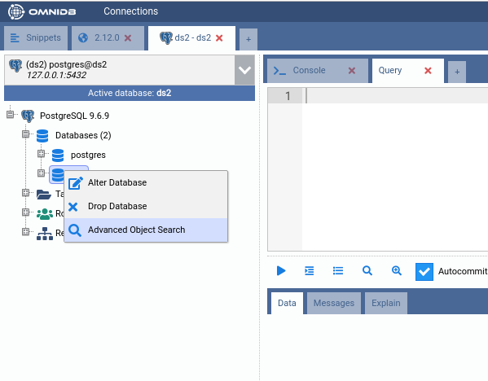
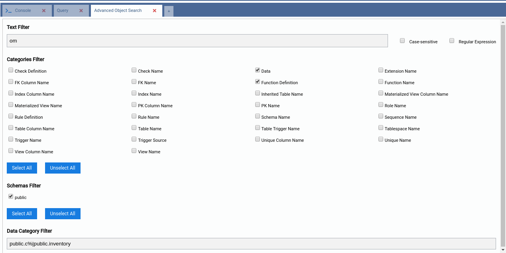
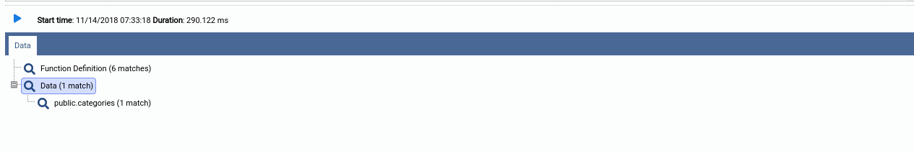
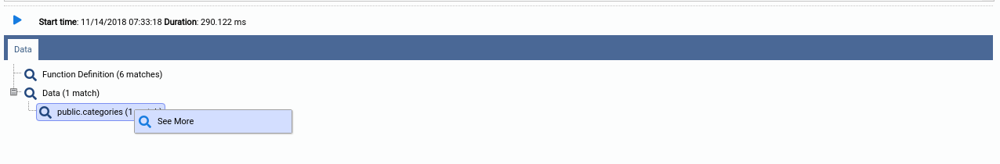
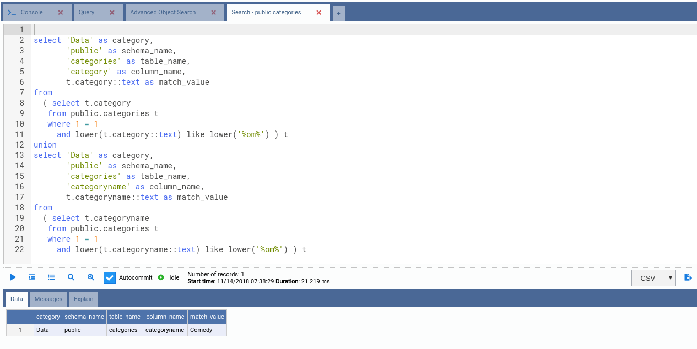

Recherche avancée d'objets
Remarque : cette fonctionnalité n'est pas disponible dans la version actuelle. Son entrée dans le menu de l'arborescence est mise en commentaire, et les fonctions du frontend ainsi que le gestionnaire Go du backend dont elle dépendait n'existent plus — elle n'a pas été portée lors de la réécriture en Go, et la relancer reviendrait à la reconstruire entièrement plutôt qu'à simplement rebasculer un interrupteur. Le reste de ce chapitre est conservé à titre de description de son fonctionnement passé, pour référence historique.
La recherche avancée d'objets permettait de rechercher, par correspondance de motif, dans les objets de la
base de données et les données des tables — l'opérateur SQL LIKE par défaut, ou des expressions
régulières complexes.
Cette fonctionnalité était accessible par un clic droit sur un nœud de base de données spécifique dans l'arborescence :

L'interface permettait de filtrer les catégories d'objets, les schémas dans lesquels les recherches seraient exécutées, et également de limiter l'espace de recherche lorsque la catégorie Data (Données) était sélectionnée, afin de rechercher un motif dans un sous-ensemble de tables :

Après avoir renseigné les champs et lancé la recherche, OmniDB l'exécutait à l'aide de plusieurs threads travaillant en parallèle pour accélérer le processus (ce paramètre est configurable ; pour plus d'informations, voir Déployer omnidb-server).
Une fois la recherche terminée, OmniDB affichait le résultat sous forme d'arborescence :

Pour plus de détails sur la recherche dans chaque catégorie, un clic droit sur le nœud souhaité et la sélection de « See More » (Voir plus) ouvraient un onglet de requête contenant la commande SQL utilisée pour effectuer cette recherche spécifique. Il suffisait alors d'exécuter la commande pour obtenir les résultats :

